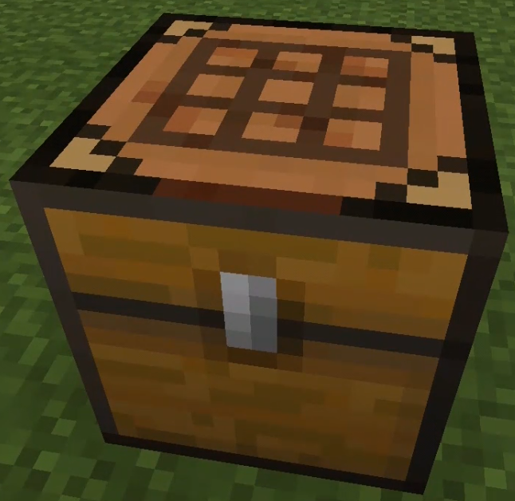
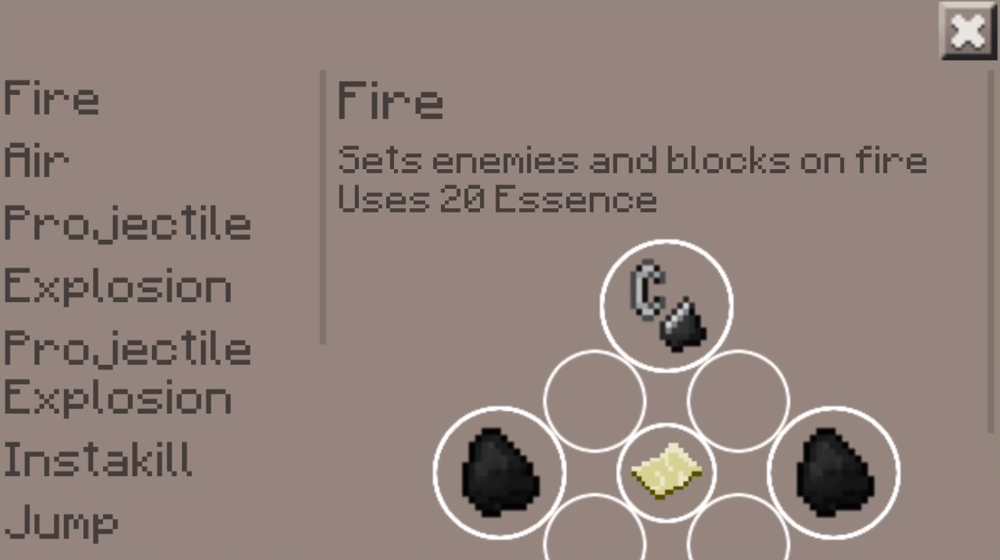
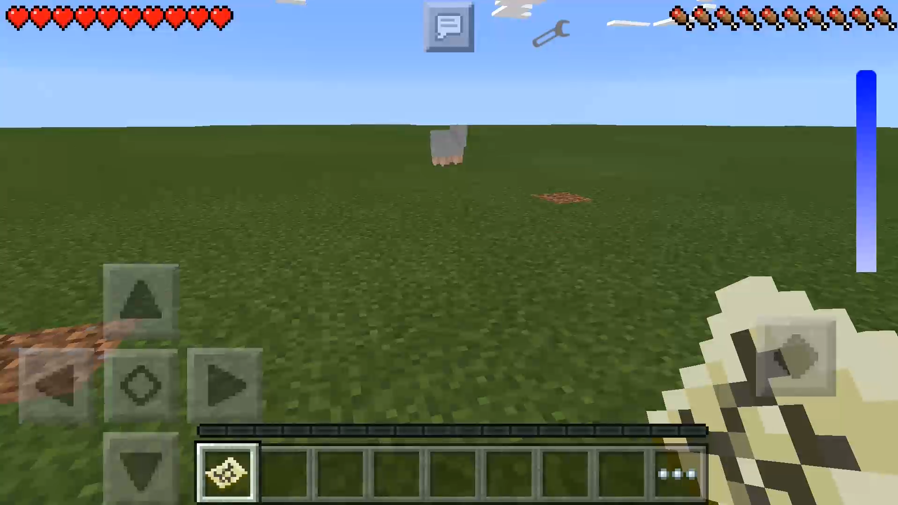

Menu
Menu
SpellCraft
Explanation
This mod adds 16 magical spells to the game. To get started you have to craft a Spell Crafter using a crafting table and 8 pieces of paper and place it in the world:
If you click the side of the crafter a chest inventory will open up. You have to put any items required for crafting a spell in here.
If you click the top of the crafter a GUI will pop up. On the left it'll show a list of all the available spells.

If you select one of them you can see some info about the spell as well as how much essence it'll use and which items you need.
To craft a spell, first put the neccesary items in the inventory. Then you can just click the crafting image to start the crafting process.
These are all the currently available spells and their functions:
Fire Spell
Sets enemies and blocks on fire
Air Spell
Pushes mobs in a 10 block radius away
Projectile Spell
Shoots an arrow
Wide Projectile Spell
Shoots 9 arrows at once
Explosion Spell
Causes an explosion
Projectile Explosion Spell
Shoots an exploding arrow
Instakill Spell
Instantly kills mobs
Jump Spell
Makes you jump into the air
Rain Spell
Toggles the rain
Speed Spell
Makes you run faster
Craft Spell
Spawns a Crafting Table
Grow Spell
Instantly grows plants
Water Spell
Spawns water
Lava Spell
Spawns lava
Time Spell
Changes the time to day or night
Fly Spell
Makes you able to fly
In the crafter you can also see that the spells use a certain amount of essence on a use. As soon as you have a spell in your hand a essence meter will pop up. A full meter contains 200 essence. Each spell will drain a different amount of essence. It will slowly regenerate again if it's missing essence.
